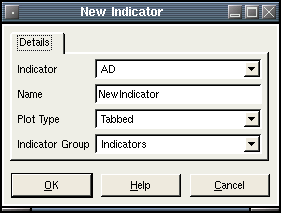

Create a new indicator for display.
Selecting New Indicator will bring up a dialog that asks you to
choose from the list of installed indicator plugins. Only indicators
that have been installed as plugins will be available. The "Name" field
requires a unique name for the new indicator. The "Create Tab" checkbox
if checked will place the new indicator in the tabbed indicator area.
If not checked, the indicator will be stacked on top of the tabbed
indicator area. Note: some indicators cannot be tabbed or stacked
because they apply only to the main chart area.

After completing the above dialog, the edit indicator dialog will be
displayed. All
of the parameters that apply to the indicator can be edited here.